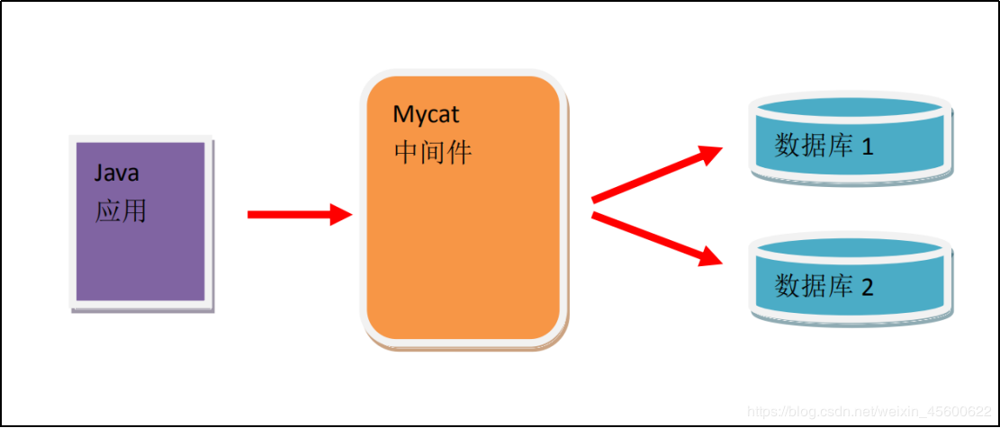

原文连接:https://www.cnblogs.com/cxydmx/p/11728513.html
MyCat教程二：mysql主从复制实现
MyCat教程三：安装及配置介绍
MyCat教程四：实现读写分离
MyCat教程五：实现分库分表
MyCat教程六：全局序列号-全局主键的自增长
一、MyCat简介
1. 什么是MyCat
MyCat 是目前最流行的基于 java 语言编写的数据库中间件，是一个实现了 MySQL 协议的服务器，前端用户可以把它看作是一个数据库代理，用 MySQL 客户端工具和命令行访问，而其后端可以用 MySQL 原生协议与多个 MySQL 服务器通信，也可以用 JDBC 协议与大多数主流数据库服务器通信，其核心功能是分库分表。配合数据库的主从模式还可实现读写分离。
MyCat 是基于阿里开源的 Cobar 产品而研发，Cobar 的稳定性、可靠性、优秀的架构和性能以及众多成熟的使用案例使得 MyCat 变得非常的强大。
MyCat 发展到目前的版本，已经不是一个单纯的 MySQL 代理了，它的后端可以支持MySQL、SQL Server、Oracle、DB2、PostgreSQL 等主流数据库，也支持 MongoDB 这种新型NoSQL 方式的存储，未来还会支持更多类型的存储。而在最终用户看来，无论是那种存储方式，在 MyCat 里，都是一个传统的数据库表，支持标准的 SQL 语句进行数据的操作，这样一来，对前端业务系统来说，可以大幅降低开发难度，提升开发速度。
MyCat 官网： http://www.mycat.io/
2. MyCat的结构

3. 使用MyCat的好处
3.1 数据量级
单一的 MySQL 其数据存储量级和操作量级有限.
Mycat 可以管理若干 MySQL 数据库,同时实现数据的存储和操作.
3.2 开源性质
- Mycat 是 java 编写的中间件. 开源,免费.
- 有非常多的人和组织对 Mycat 实行开发,维护,管理,更新.
- Mycat 版本提升较快,可以跟随环境发展.如果有问题,可以快速解决.
- Mycat 有开源网站和开源社区.且有官方发布的电子书籍.
- Mycat 是阿里原应用 corba 转型而来的.
3.3 市场应用
MyCat 在互联网应用中占比非常高.
二、MyCat中的概念介绍
1. 切分
逻辑上的切分. 在物理层面,是使用多库[database],多表[table]实现的切分.
1.1 纵向切分/垂直切分
就是把原本存储于一个库的数据存储到多个库上。
由于对数据库的读写都是对同一个库进行操作，所以单库并不能解决大规模并发写入的问题。例如，我们会建立定义数据库 workDB、商品数据库 payDB、用户数据库 userDB、日志数据库 logDB 等，分别用于存储项目数据定义表、商品定义表、用户数据表、日志数据表等。
优点
- 减少增量数据写入时的锁对查询的影响。
- 由于单表数量下降，常见的查询操作由于减少了需要扫描的记录，使得单表单次查询所需的检索行数变少，减少了磁盘 IO，时延变短。
缺点：无法解决单表数据量太大的问题。
1.2横向切分/水平切分
把原本存储于一个表的数据分块存储到多个表上。
当一个表中的数据量过大时，我们可以把该表的数据按照某种规则，进行划分，然后存储到多个结构相同的表，和不同的库上。例如，我们 userDB 中的 userTable 中数据量很大，那么可以把 userDB 切分为结构相同的多个 userDB：part0DB、part1DB 等，再将 userDB 上的 userTable，切分为很多userTable：userTable0、userTable1 等，然后将这些表按照一定的规则存储到多个 userDB 上。
优点
- 单表的并发能力提高了，磁盘 I/O 性能也提高了。
- 如果出现高并发的话，总表可以根据不同的查询，将并发压力分到不同的小表里面。
缺点：无法实现表连接查询。
2. 逻辑库-Schema
Mycat 中定义的 database.是逻辑上存在的.但是物理上是不存在的.主要是针对纵向切分提供的概念.
3. 逻辑表-table
Mycat 中定义的 table.是逻辑上存在,物理上是不存在的.主要是针对横向切分提供的概念.
4. 默认端口
| 应用 | 端口 |
|---|---|
| MySQL | 3306 |
| Mycat | 8066 |
| tomcat | 8080 |
| Oracle | 1521 |
| nginx | 80 |
| http | 80 |
| redis | 6379 |
5. 数据主机 - dataHost
物理 MySQL 存放的主机地址.可以使用主机名,IP,域名定义.
6. 数据节点 - dataNode
配置物理的 database. 数据保存的物理节点.就是 database.
7. 分片规则
当控制数据的时候,如何访问物理 database 和 table.就是访问 dataHost 和 dataNode 的算法. 在 Mycat 处理具体的数据 CRUD 的时候,如何访问 dataHost 和 dataNode 的算法.如:哈希算法,crc32 算法等.
关注微信公众号【程序员的梦想】，专注于Java，SpringBoot，SpringCloud，微服务，Docker以及前后端分离等全栈技术。